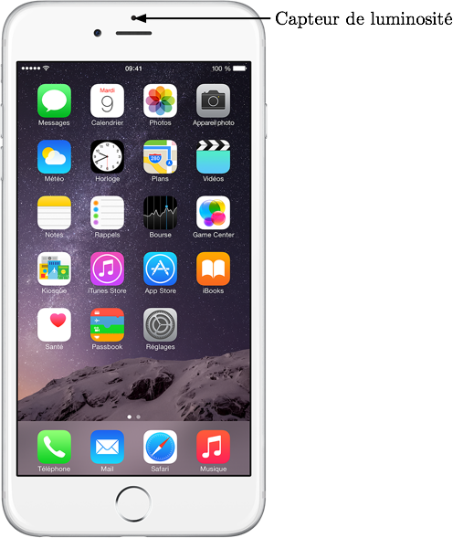
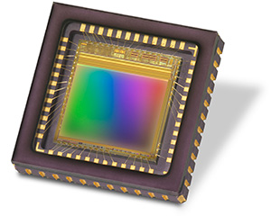
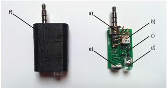
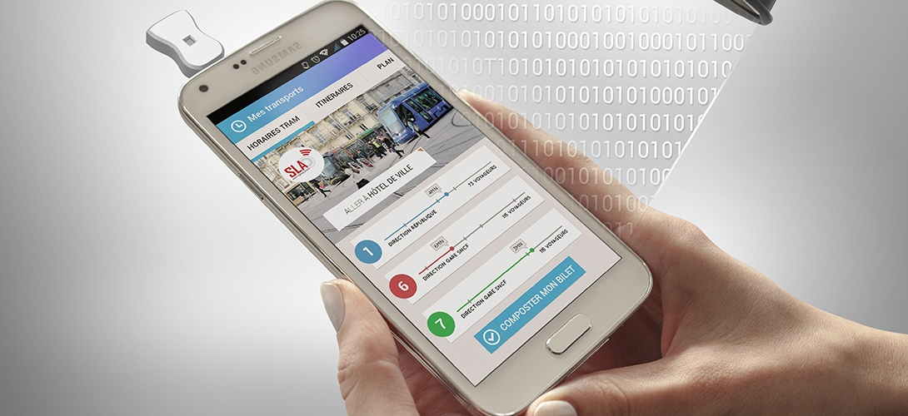
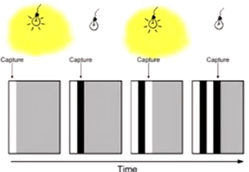
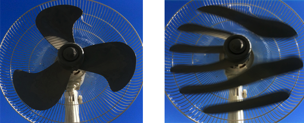
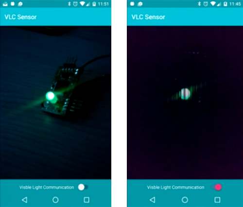

Le but est ici de voir quels sont les possibilités de récupérer un signal provenant d’une modulation lumineuse sur un smartphone.
Capteurs à notre disposition
Premièrement, regardons quels sont les capteurs à notre disposition.
Capteur de luminosité
Le premier capteur permettant de récupérer un signal lumineux est le capteur de luminosité présent sur la quasi totalité des smartphone récents. Ce capteur permet généralement de régler la luminosité de l’écran en fonction de la luminosité extérieure. Ce capteur est est en fait une simple photodiode (ou phototransistor). Cependant, la fréquence de coupure en haute fréquence de ce capteur est très basse, en effet les photodiodes utilisées ne sont pas adaptés pour travailler à haute fréquence1.

Caméra
L’autre capteur présent sur les smartphone permettant de récupérer une information lumineuse est la caméra. Cette caméra est généralement un capteur photographique CMOS.

Cependant, les capteurs CMOS intégrés aux smartphones actuels l’acquisition que de 30 voir 60 images par secondes, ce qui est beaucoup trop faible pour obtenir un débit suffisant. Cependant, il existe une technique qui va permettre d’obtenir un débit relativement élevé: le Rolling Shutter Effect.
Adaptateur sur prise Jack
Une autre possibilité est d’utiliser un adaptateur qui vient se brancher sur la prise jack du téléphone. L’adaptateur est composé d’un circuit électronique de commande ainsi que d’une photodiode et d’une LED adaptées pour un fonctionnement haute fréquence (par exemple à base de GaAs). Cette solution à l’avantage de pouvoir également émettre de l’information grâce à une photodiode. Cependant, le débit va être limité par la fréquence d’échantillonnage de la carte son du smartphone. En effet, l’information lumineuse va être transformée en information électrique par la photodiode avant d’être transmisse au téléphone par l’intermédiaire de la carte son. Cette solution est tout de même commercialisée, et est utilisé par Disney sur son projet de recherche sur la communication par lumière visible.
 
Capteur dédié
La dernière solution et certainement la plus efficace et l’implémentation d’un capteur dédié à la communication par lumière visible dans les smartphones. De tels capteurs seront probablement présent dans la plupart des smartphones haut de gamme d’ici 5 ans. Par exemple, le premier smartphone présentant un capteur dédié LiFi a été présenté au CES 2014 par la société oledcomm.
Utilisation de la caméra
Fonction d’un capteur CMOS
Contrairement à ce que l’on pourrait penser, pour un capteur CMOS, l’acquisition pour une image ne va pas se faire simultanément pour tous les pixels, mais ligne de pixel par ligne de pixels. Sur l’image ci dessous, les pixels de gauche acquièrent le signal avant les pixels de droite, ainsi, si la vitesse d’acquisition d’une ligne de pixels est suffisamment grande, il devrait être possible d’observer le signal lumineux de manière spatiale sur l’image obtenue.

Le Rolling Shutter Effect
L’effet de ce fonctionnement des capteurs CMOS est visible lorsque l’on prend des objets qui tournent à très grande vitesse. Ci dessous, une image est prise d’un ventilateur tournant à très grande vitesse et on peut observer une déformation de l’image à droite. Cette déformation est due au fait que le ventilateur a eu le temps de tourner pendant l’instant d’acquisition des pixels du haut et des pixels du bas. On appelle cet effet le Rolling Shutter Effect.

Application Android
En pratique, il est possible d’utiliser cet effet pour acquérir un signal lumineux. Sur Android, depuis la version Lolipop, il y a une nouvelle API Caméra 2 qui permet de régler finement tous les paramètres de la caméra notamment l’exposure time, cela permet de se mettre dans les conditions de l’obtention de ce rolling shutter effect.
Un “proof of concept” a été développé par Alexis Duque, il y a une petite carte électronique comportant un capteur de température, un micro contrôleur et une LED. L’idée et de récupérer la température ambiante et de la transmettre en utilisant la LED. Puis en utilisant le capteur CMOS d’un téléphone Android, et en utilisant une application dédiée, il est possible de récupérer le signal et de l’afficher à l’écran.
